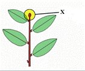

Тестирование
Вопрос №1
За счет чего происходит вставочный рост?
За счет травматической образовательной ткани
За счет удлинения междоузлий
За счет развития верхушечной почки
За счет боковой образовательной ткани
Вопрос №2
Какие междоузлия имеют быстрорастущие побеги?
Длинные
Короткие
Узкие
Они не имеют междоузлий
Вопрос №3
При каком листорасположении листья отходят по одному от узла и располагаются на стебле поочередно?
Супротивное
Мутовчатое
Спиральное
Розеточное
Вопрос №4
Как называется почка, обозначенная буквой Х (см. рисунок)?

Придаточная
Верхушечная
Спящая
Пазушная
Вопрос №5
Какие почки не имеют в себе зачаточных побегов?
Вегетативные
Генеративные
Зародышевые
Нет верного ответа
Завершить тестирование